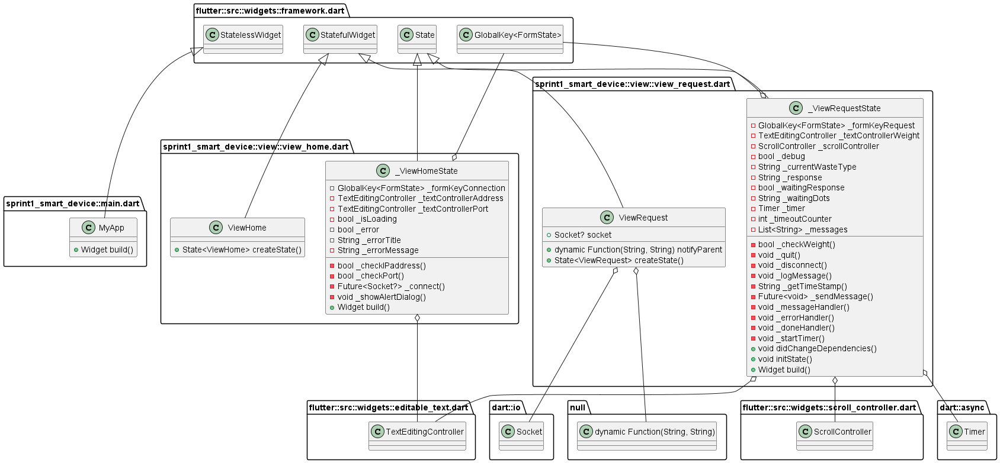
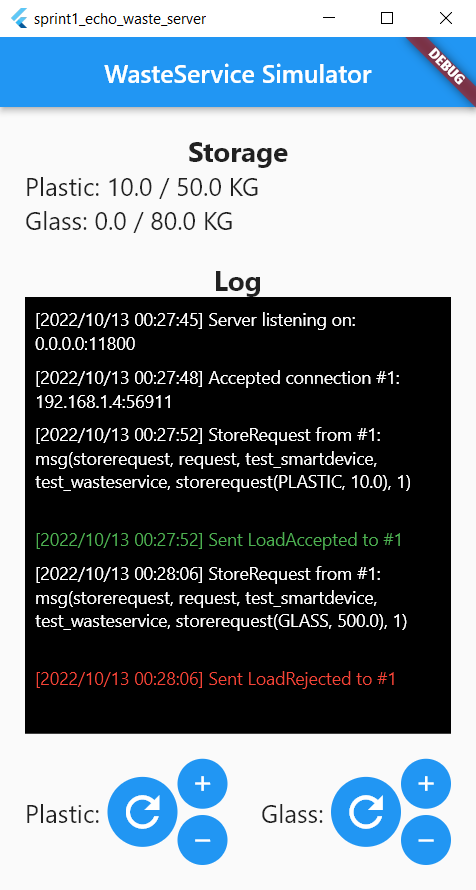

Project
Setup Remote Communications
Port Forwarding
-
Access to the router page: search
192.168.1.1in a browser, and login with the credentials:
-
Make sure you have selected the
expert user mode:
- Select the
Internetsection and thenPort mapping. -
Specify the information needed:
- Service:
TCP. - (Optional) Device:
your_device_name. - LAN IP address: the IP address of the device where the service runs.
- Port/Interval.
Public port : the port you want to be use (connections to that will be forwarded to the LAN port).- LAN port: the port the service is using.

- Service:
-
Check the
router public IP
router_public_ip :public_port
SmartDevice Simulator
Class Diagram
Views


Echo Waste Server
store_requests with load_accepted / load_rejected,
updating the capacity of containers and logging messages.
Its purpose is to test the SmartDevice directly and completely on smartphone, without having to connect it to another device. 